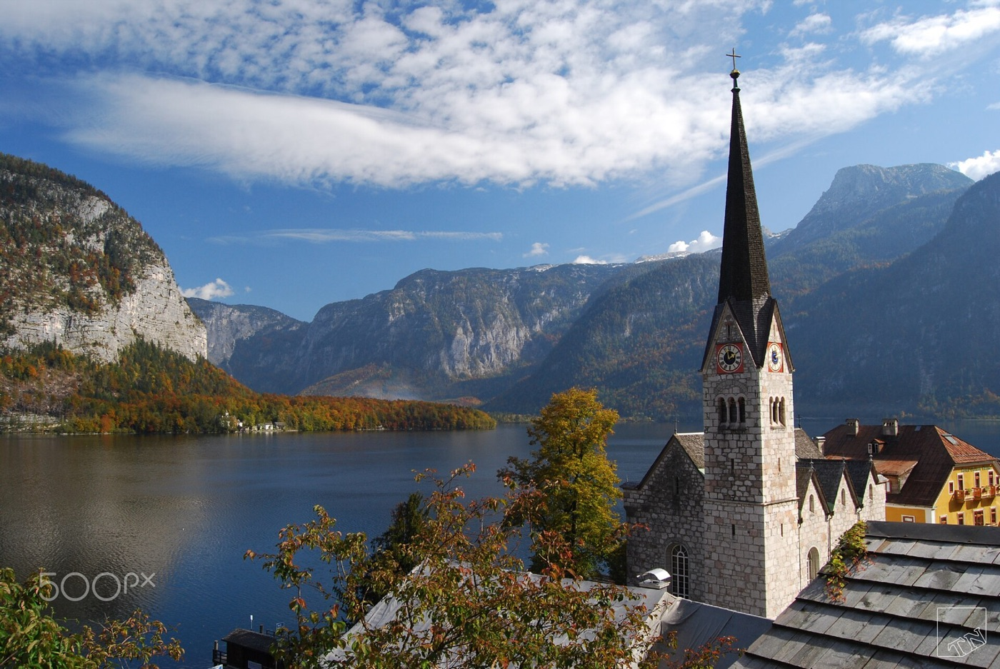
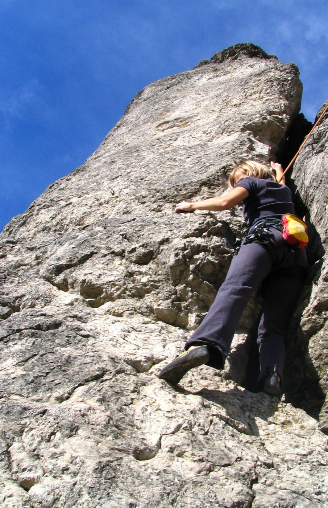
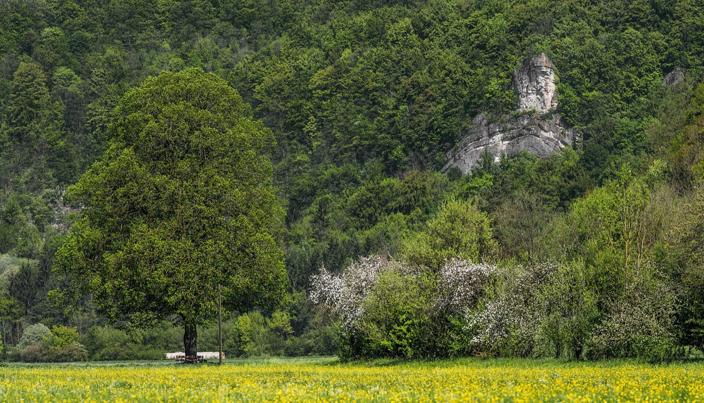
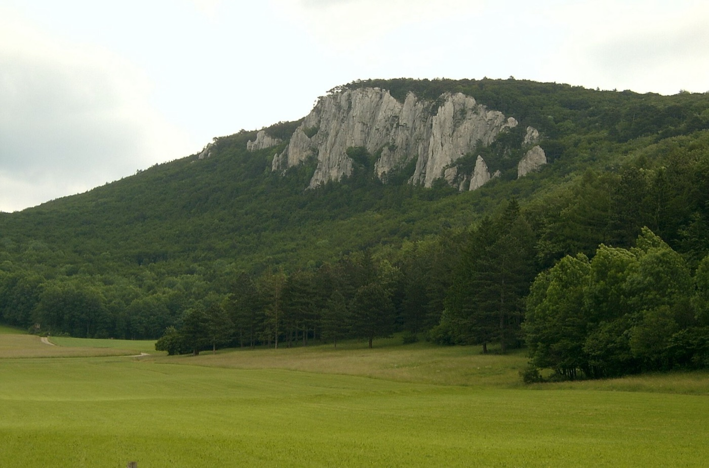
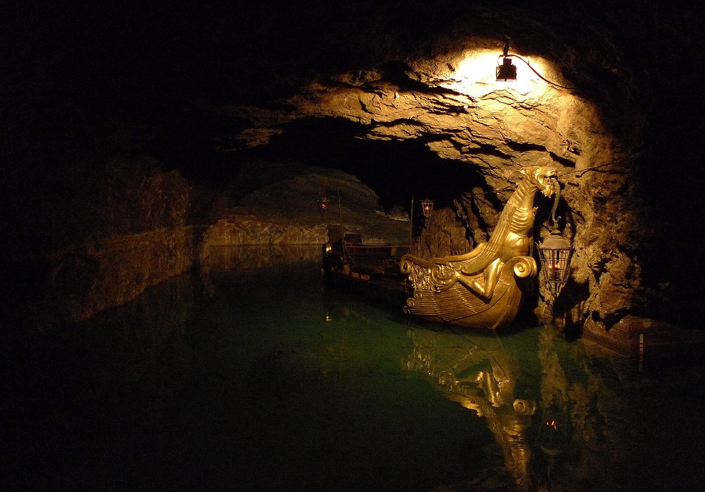
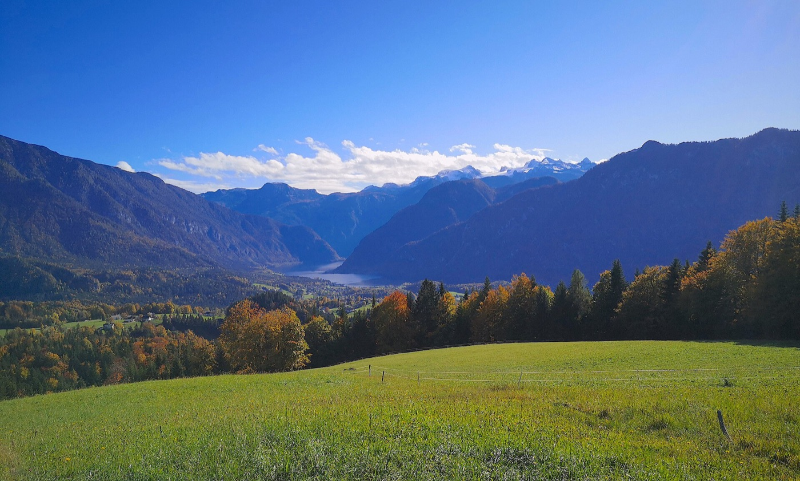
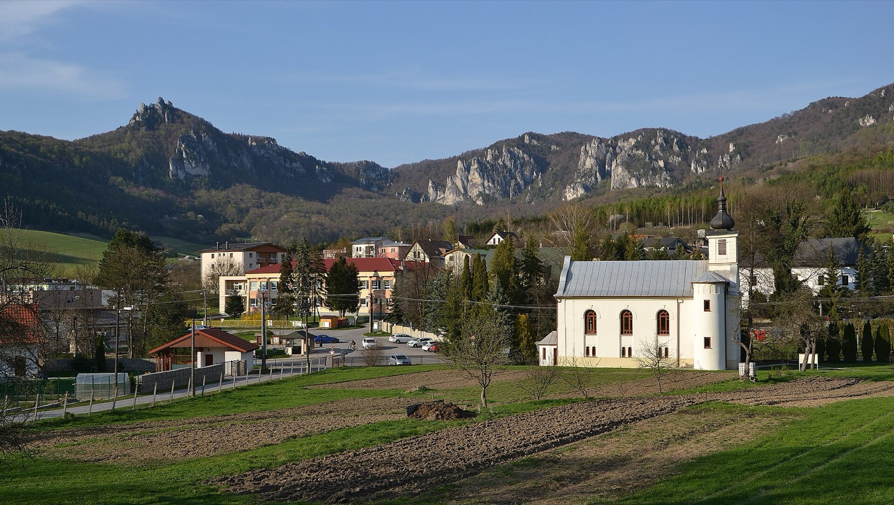
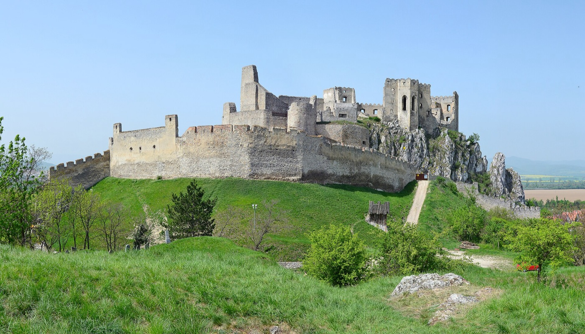
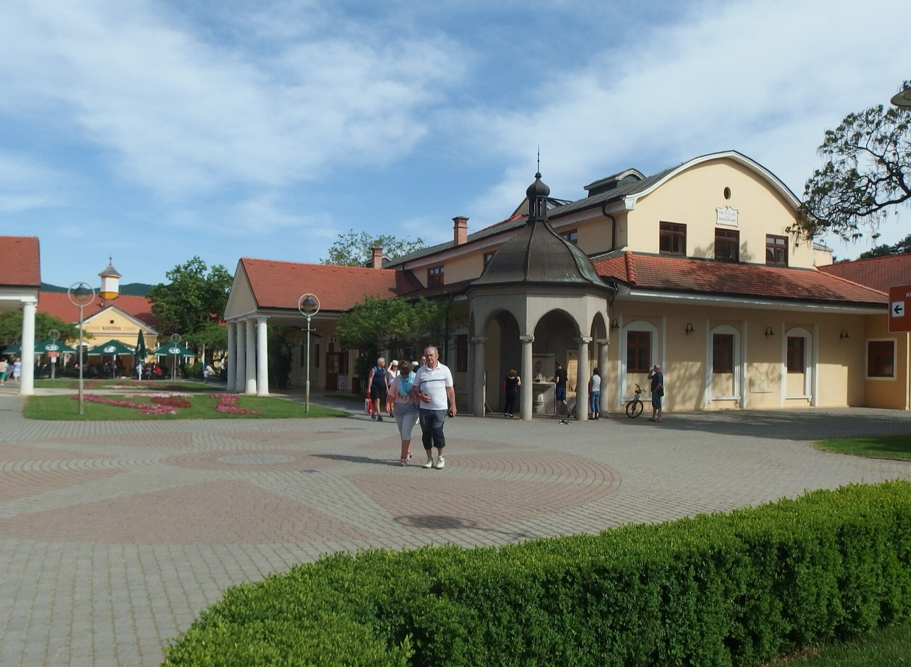

1. Frankenjura
3 h · €€ · dogs ★★★★★Best climbing

2. Vienna Woods
3.5 h · €€€ · dogs ★★★★☆Best mix of everything

3. Bad Goisern / Hallstatt
4–4.5 h · €€€ · dogs ★★★☆☆Best scenery

4. Hrádok / Piešťany
4 h · € · dogs ★★★★☆Warmest rock, cheapest
1. Frankenjura (Franconian Switzerland), Germany



Climbing
One of the biggest sport climbing areas in the world, with over 10,000 limestone routes and plenty in the 4a–6c range. Walks to the rock are usually 5–15 minutes, and with so many crags you can always pick a sunny, south-facing one.
Other activities
- Hiking: short loops through river valleys, rock towers and castles perched on cliffs. It looks great in autumn colours. Good walks: Pottenstein to Tüchersfeld, and the Gößweinstein viewpoints.
- Bamberg (about 45 min): one of the prettiest old towns in Germany and a UNESCO site. Try the local smoked beer (Rauchbier).
- Nuremberg (about 45 min): the castle and the old town.
- Wellness: Obermain Therme in Bad Staffelstein (about 1 h) has very strong saltwater thermal pools, some of them outdoors.
- Teufelshöhle (Devil's Cave) in Pottenstein has impressive dripstone formations.
Pros
- The best climbing of all four options by a wide margin
- Close, with a simple drive
- Cosy villages and good, cheap Franconian food and beer
Cons
- Many crags sit in forest, so they're cold and damp in late October and slow to dry after rain
- The popular classic routes are polished (worn slippery)
- No big "wow" hike. The walks are pretty rather than dramatic.
Cost: €€ (mid-range)
About €350–450 per person. German motorways are toll-free, the drive is short, and food and accommodation are reasonably priced.Dogs: ★★★★★
Germany is very dog-friendly. Most guesthouses and apartments take dogs, and dogs are normal inside restaurants and beer halls. Short forest approaches mean the dogs can come to every crag. Only the cave and the spa are off-limits for them.2. Vienna Woods: Baden / Peilstein / Hohe Wand, Austria


Climbing
- Peilstein: a classic Viennese crag with around 600 limestone routes, many in easy to mid grades, and short walks to the rock.
- Hohe Wand: sunnier walls facing south and east, which helps in late autumn. It also has longer multi-pitch routes.
Other activities
- Vienna (30 min): a full day of sightseeing, cafés and markets.
- Wellness: Römertherme in Baden is a big thermal spa right in town, so it's easy to go after climbing.
- Hiking: the Hohe Wand plateau has a Skywalk viewing platform and wide views, plus forest walks in the Vienna Woods.
- Seegrotte Hinterbrühl: a boat ride on Europe's largest underground lake, in an old mine.
- Heuriger (wine taverns) in Gumpoldskirchen, among the vineyards.
Pros
- The best mix of everything. If the weather is bad, you have a capital city, a spa and wine all within 30 minutes.
- Baden is a nice, walkable base
Cons
- Peilstein is in forest and polished, much like the Frankenjura
- Higher prices than Germany or Slovakia
- More driving between activities, and Vienna traffic
Cost: €€€ (most expensive, tied with option 3)
About €450–600 per person. Accommodation and eating out cost more in Austria. Add a motorway vignette (toll sticker) and dog fees, which many Austrian hotels charge per dog per night.Dogs: ★★★★☆
Dogs are welcome in most hotels (usually for an extra fee) and restaurants, and at both crags. Vienna is fine with dogs, but they need a muzzle on public transport. The spa and the Seegrotte are without dogs.3. Bad Goisern / Hallstatt (Salzkammergut), Austria



Climbing
Limestone sport climbing in the Echerntal valley right behind Hallstatt, plus smaller crags around Bad Goisern. The area is much smaller and less developed than Frankenjura or Hrádok. There are also several via ferratas (climbing routes fitted with fixed steel cables and ladders), such as the Echernwand route above Hallstatt. A via ferrata is a fun alternative when it's too cold to sit around belaying.
Other activities
- Gosausee: an easy loop around a lake with the Dachstein glacier reflected in the water. One of the most beautiful spots in Austria.
- Ewige Wand in Bad Goisern: a path cut into a cliff face high above the valley.
- Hallstatt: the famous postcard village on the lake. Go early in the morning, before the tour buses arrive.
- Salt mine (Salzwelten Hallstatt): the oldest salt mine in the world, with miners' slides inside and a Skywalk viewing platform above the village.
- Bad Ischl (20 min): the former summer resort of Emperor Franz Joseph, with the Kaiservilla and the Zauner pastry shop.
- Wellness: Salzkammergut Therme in Bad Ischl (20 min).
Pros
- By far the most spectacular scenery: real Alps, lakes and the Dachstein glacier
- Via ferratas add a climbing-like option the other places don't have
- Lots to do when it's too cold or wet to climb
Cons
- The weakest sport climbing of the four. Fewer routes, and the deep valleys get little sun in late October, so the rock is cold.
- Many lifts and caves close for the season around late October (e.g. the Dachstein cable car and ice caves). Check what's still running.
- Higher chance of cold, rain or early snow than the other options
- Hallstatt is overrun with tourists even out of season
- Long drive, tied with Hrádok
Cost: €€€ (most expensive, tied with option 2)
About €450–600 per person. Prices are similar to Vienna Woods, with the longest drive and Austrian dog fees. Staying in Hallstatt itself costs noticeably more, so Bad Goisern is the better base.Dogs: ★★★☆☆
The hiking is superb with dogs (Gosausee, Ewige Wand, the lakeshores). But dogs can't do via ferratas or go into the salt mine or spa, and Hallstatt's packed lanes aren't fun with two dogs. Someone has to stay with them during several of the best activities.4. Hrádok / Piešťany / Váh valley, Slovakia




Climbing
- Hrádok: Slovakia's most popular sport crag. It's limestone, faces south, and is very sunny and warm for late autumn. Short walk to the rock, and the grades suit you well.
- Manínska tiesňava / Súľov (about 1 h): a dramatic limestone gorge with more sport routes, easy to combine with a hike.
Other activities
- Wellness in Piešťany: a classic spa town with thermal water, mud treatments and a spa island. The strongest wellness option on this list.
- Castles: Trenčín, the ruins of Beckov on a cliff, and Čachtice (home of the "Blood Countess" Báthory).
- Hiking: Súľov rocks (strange conglomerate towers and arches) and Manín gorge. For a proper mountain day, Malá Fatra / Vrátna dolina is about 1.5 h away.
Pros
- The warmest climbing, because Hrádok is sunny and south-facing
- Cheapest of the four options
- Top-quality spas
Cons
- Hrádok gets crowded and polished on holidays (such as 1 November)
- Less charming base towns than Bamberg or Baden
Cost: € (cheapest)
About €250–350 per person. Accommodation, food and spa visits cost roughly half of Austrian prices, which more than makes up for the longer drive and the Slovak motorway vignette.Dogs: ★★★★☆
Plenty of apartments accept dogs, often without extra fees. Dogs are fine at the crags and on the hikes. The spa and castle interiors are without dogs, and restaurants allow dogs inside less consistently than in Germany or Austria.At a glance
| Drive | Climbing | Hiking | Rainy-day options | Dogs | Cost per person | |
|---|---|---|---|---|---|---|
| 1. Frankenjura | 3 h | ★★★ | ★★ | ★★ | ★★★★★ | €€ · €350–450 |
| 2. Vienna Woods | 3.5 h | ★★ | ★★ | ★★★ | ★★★★☆ | €€€ · €450–600 |
| 3. Bad Goisern / Hallstatt | 4–4.5 h | ★ (+ via ferratas) | ★★★ | ★★ | ★★★☆☆ | €€€ · €450–600 |
| 4. Hrádok / Piešťany | 4 h | ★★★ (warmest) | ★★ | ★★★ (spa) | ★★★★☆ | € · €250–350 |
Costs are rough estimates for 4 nights per person: shared apartment or mid-range hotel, eating out most of the time, one spa visit or attraction. Fuel and vignettes (toll stickers) are split three ways.
My take: For climbing first, choose Frankenjura. It's also the easiest with the dogs. If you want the safest choice for climbing in late-October weather, choose Hrádok, because its sun-facing rock stays warm. It's also the cheapest. If you want the best mix of activities, choose Vienna Woods. If scenery and hiking matter more than climbing, choose Bad Goisern / Hallstatt.